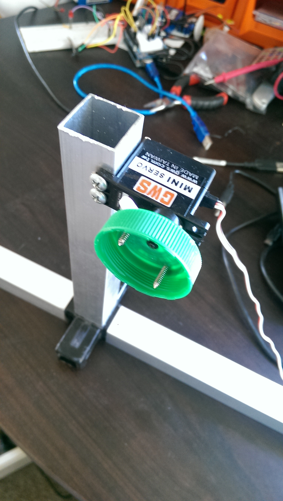
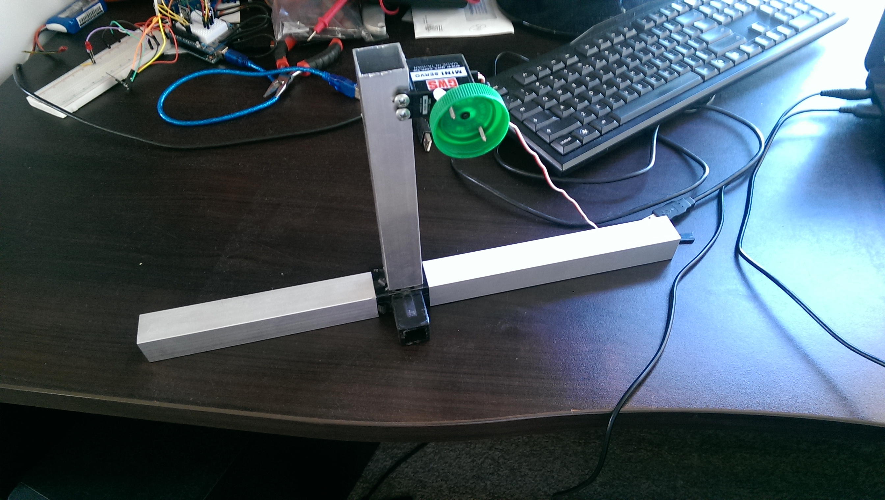

The idea of this project was to create an inexpensive fish feeder using the Arduino that would work unattended while we were away on holidays for two weeks. I went through several ideas but ended up going with what seemed like the simplest. The basic concept is the plastic bottle is turned by the servo and food falls out the whole when the whole is at the bottom.
The first step was to build a frame to hold the bottle high enough from the tank so that no moisture would clog the whole up with wet fish food. I was able to get hold of some scrap fixtures to create the frame.
After several tests on the frame I began to be concerned that the servo would not be able to take the weight the whole time we were away. I duplicated the frame to go opposite the bottle with a steel rod holding holding it in place.
The code to run the servo is pritty basic
The first step was to get the servo turning
#include
int repetitions = 10; //number of turns the servo should make
Servo myservo; // create servo object to control a servo
int pos = 0; // variable to store the servo position
void setup() {
myservo.attach(9); // attaches the servo on pin 9 to the servo object
Serial.begin(9600);
}
for (int i=0; i <= repetitions; i += 1){
for (pos = 0; pos <= 180; pos += 1) { // goes from 0 degrees to 180 degrees
// in steps of 1 degree
myservo.write(pos); // tell servo to go to position in variable 'pos'
delay(15); // waits 15ms for the servo to reach the position
}
for (pos = 180; pos >= 0; pos -= 1) { // goes from 180 degrees to 0 degrees
myservo.write(pos); // tell servo to go to position in variable 'pos'
delay(15); // waits 15ms for the servo to reach the position
}
}
}
}
I now needed to work out how many repetitions were required to supply the amount of food needed. This was just a matter of trial and error. I eventually decided on 11.
Next we needed to add a timer so the 11 reps happened every 12 hours. I used the mils() function. Here is the completed code:
#includeint repetitions = 10; //number of turns the servo should make long interval = 43200000; // interval between turns (12 hours) unsigned long previousMillis = 43000000; // the last time the servo was turned Servo myservo; // create servo object to control a servo int pos = 0; // variable to store the servo position void setup() { myservo.attach(9); // attaches the servo on pin 9 to the servo object Serial.begin(9600); } void loop() { // check to see if it's time to turn the servo unsigned long currentMillis = millis(); if(currentMillis - previousMillis >= interval) { // Serial.print("time passed: "); // Serial.print((currentMillis / 1000) / 60); // Serial.print(" minutes"); previousMillis = currentMillis; for (int i=0; i <= repetitions; i += 1){ for (pos = 0; pos <= 180; pos += 1) { // goes from 0 degrees to 180 degrees // in steps of 1 degree myservo.write(pos); // tell servo to go to position in variable 'pos' delay(15); // waits 15ms for the servo to reach the position } for (pos = 180; pos >= 0; pos -= 1) { // goes from 180 degrees to 0 degrees myservo.write(pos); // tell servo to go to position in variable 'pos' delay(15); // waits 15ms for the servo to reach the position } } } }